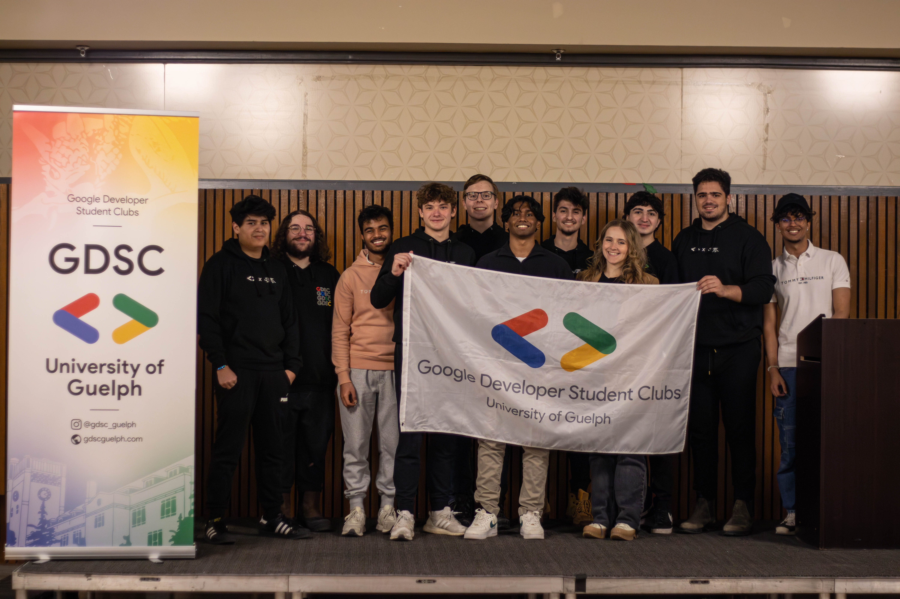
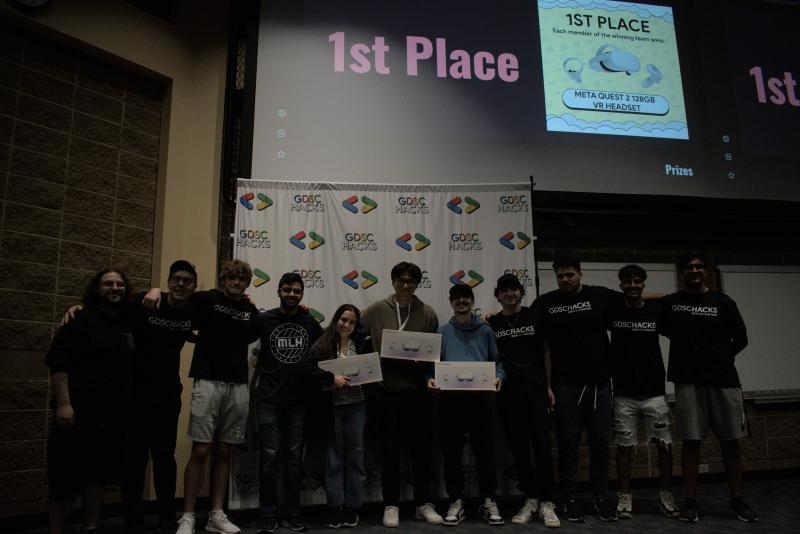
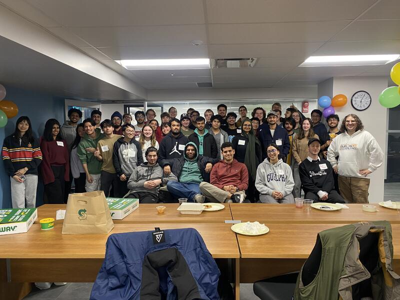
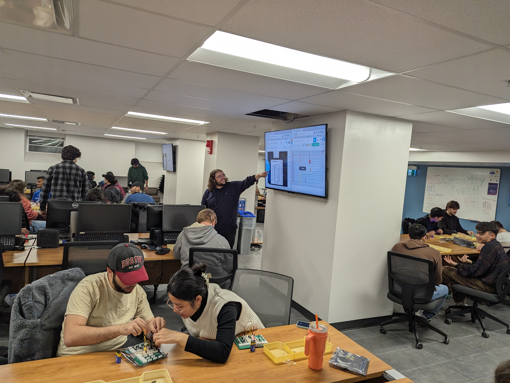
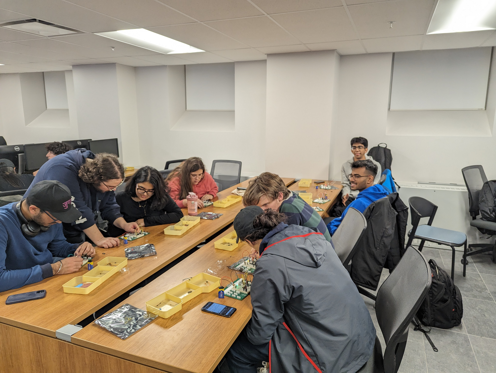
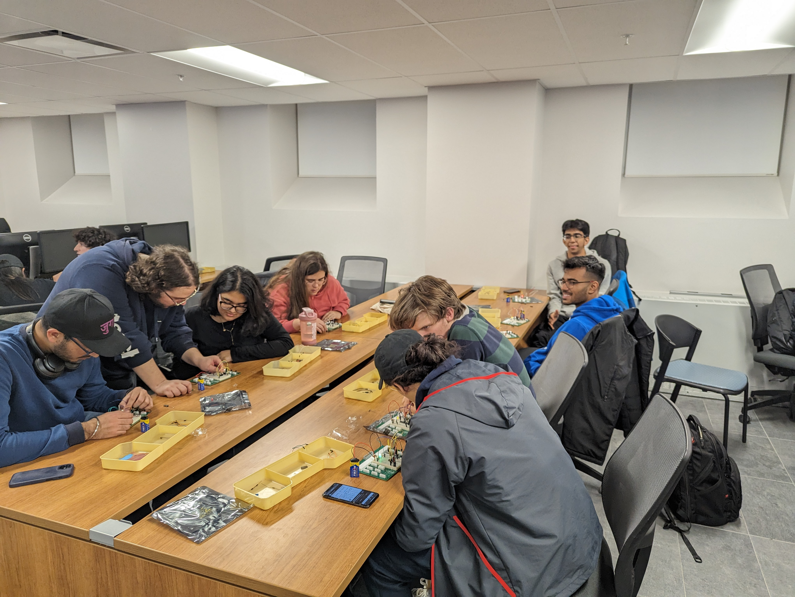
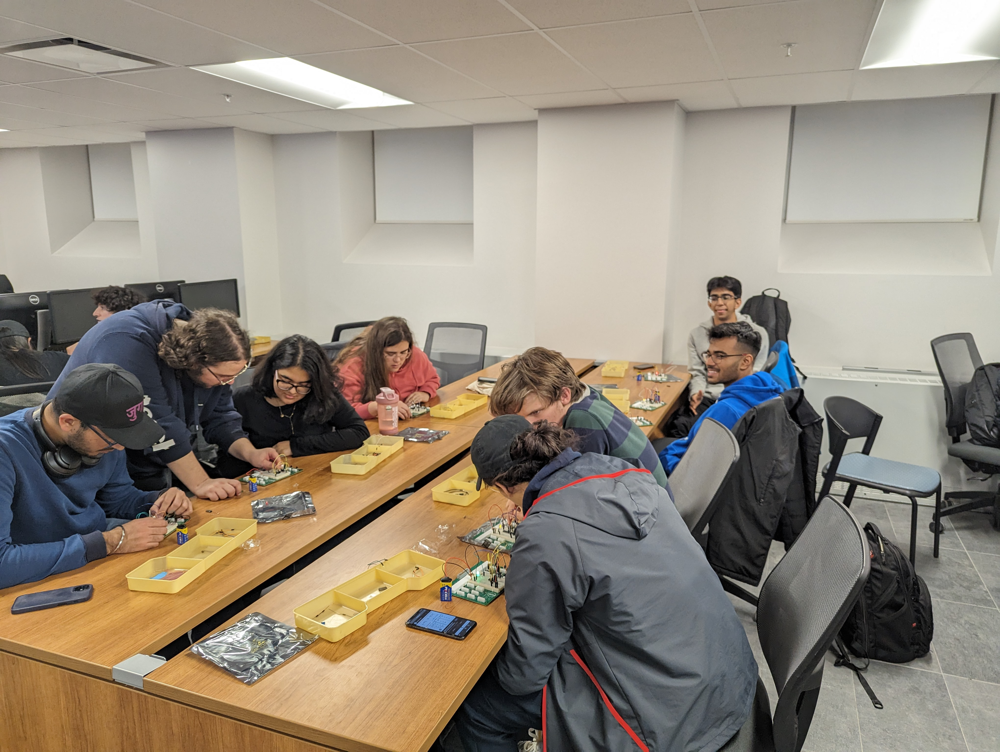

Extracurriculars
Event Operations Manager
Google Developer Student Club
2023 - 2024
- Planned the GDSCHacks hackathon; focusing on securing buildings, funding, and sponsors. The Events Team has contacted over 300+ individuals, including UofG administrative staff, external sponsors in the Guelph area, and various UofG Computing, Business, and Engineering clubs.
- GDSCHacks had an attendance of over 200+ individuals and a budget of $15,000, co-sponsored officially by Google, GeeksforGeeks, Major League Hacking, the College of Engineering and Physical Sciences Student Council, the School of Computer Science, the School of Engineering, Ctrl V, and more.


Vice President of Social Affairs
Society of Computing and Information Sciences
2023 - 2024
- Played a key role in the club's success by collaborating on leadership activities and managing finances, including securing over $8,000 in funding, improving our Makerspace hardware inventory, and ensuring compliance with organizational requirements for the club.
- Delivered engaging sessions as a speaker in the Circuitry workshop series, effectively teaching students about circuitry concepts. Actively gathered feedback for continuous improvement and documented successes for future reference.



 

